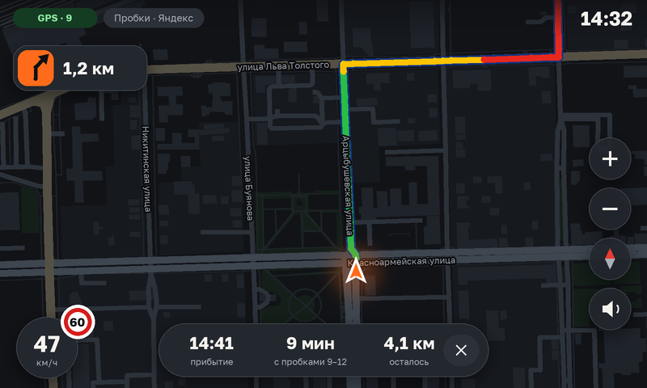
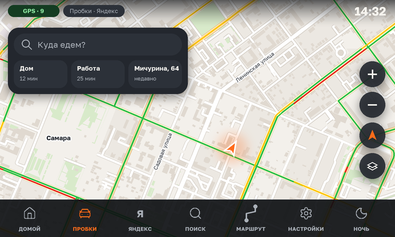
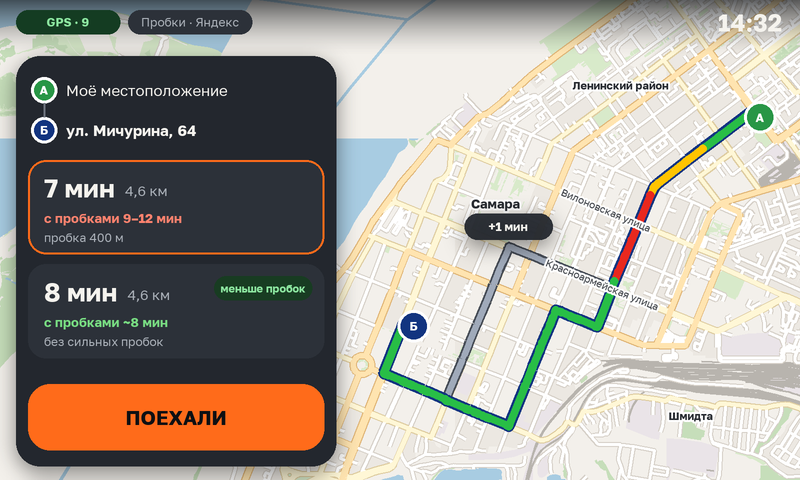
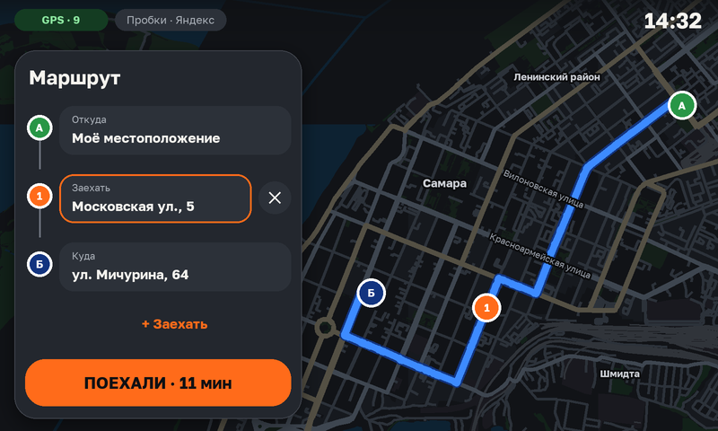
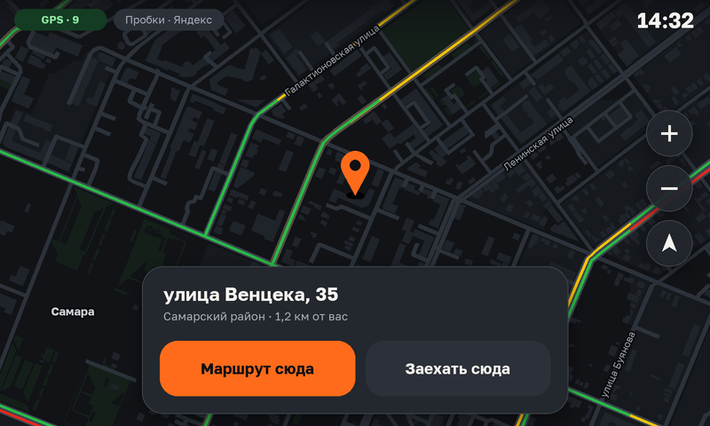
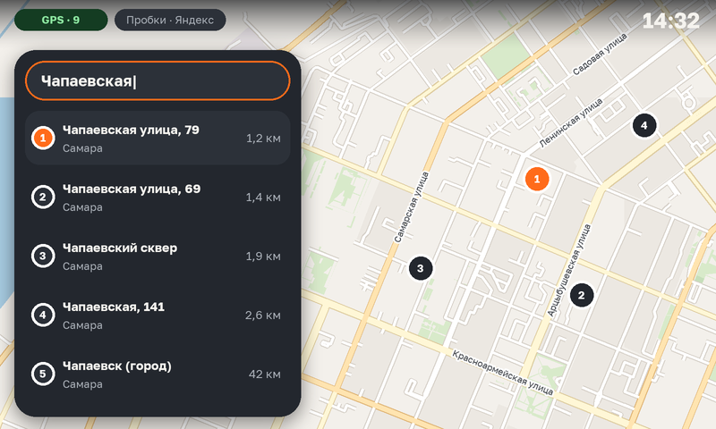

На основе VestaHome 0.6 (палитра, шрифт Golos, акцент из темы VH, нижняя панель) с оглядкой на дизайн-систему
Škoda Flow (Red Dot 2021): карта на весь экран, поверх — плавающие скруглённые карточки с тенью вместо полос; на
карточке одна главная цифра; один акцент; кнопки — круглые плитки справа; много воздуха. Карта — векторная
(настоящие тайлы OpenFreeMap, Самара), своей палитрой: дневная тёплая светлая и ночная своя (не инверсия), подписи
улиц всегда ровные — и когда карта повёрнута по курсу. Маршрут — настоящий OSRM, цвета пробок на нём — для примера.
Ведение, день, перед поворотом (300 м или 20 с): большая карточка, 250 px. Карта по курсу, маршрут окрашен по пробкам, подписи улиц ровные при повороте.

Ведение, ночь, до поворота далеко: компактная подсказка (знак и расстояние, ~¼ большой). Своя ночная палитра (не инверсия дня).

Просмотр. «Куда едем?» и быстрые места; пробки тонкими линиями вдоль улиц; нижняя панель VH по касанию — «Поиск» и «Маршрут» на средних местах.

Варианты. Слева — А/Б, варианты с временем, вилкой по пробкам и пометкой, «ПОЕХАЛИ»; на карте другой вариант серым с «+1 мин».

Редактор маршрута. Точки лесенкой А — «Заехать» — Б, «+ Заехать», «ПОЕХАЛИ» со временем.

Долгое нажатие. Булавка, карточка с адресом и расстоянием, «Маршрут сюда» / «Заехать сюда».

Поиск. Найденное — нумерованные места в панели и те же номера на карте.
Что меняется по сравнению с нынешней OSMapsCE
Верхняя полоса статуса → мягкая тень сверху: часы и «чипы» (GPS, источник пробок); карта видна до края.
Подсказка поворота: большая карточка (стрелка в квадрате акцента, расстояние крупно, улица, «затем…»,
250 px) — только перед поворотом (300 м или 20 с); в остальное время — компактная, ~¼ большой: знак и расстояние.
Цвета — как у VestaHome: карточки и круглые кнопки цвета его плиток (23272E), сплошные; нижняя панель —
сплошная, как у VestaHome; значки — Lucide, как у VestaHome; «назад» — круг слева внизу.
Поездка — «таблетка» внизу: прибытие, минуты (с вилкой по пробкам), километры, «✕» — закончить.
Скорость и знак лимита — круг слева внизу; «+ / −», компас, звук — круглые кнопки справа.
Поиск, варианты, редактор — левая панель 320 px поверх карты: карта справа видна и показывает выбор (номера
мест, А/Б, варианты серым с «+1 мин»).
Долгое нажатие — булавка и карточка снизу: адрес, расстояние, «Маршрут сюда» (акцент) и «Заехать сюда».
Векторная карта даёт: подписи не переворачиваются, ночная палитра своя, линии ровные на любом масштабе, нет
плиток OSM по сети (файл региона на SD). Растровая версия этого дизайна тоже возможна — меняется только карта.
Шрифт — Golos Text (как VestaHome; в OSMapsCE сейчас Tahoma).
Обводки (правило 2026-10-26, как в современных системах — Material 3, iOS, Škoda Flow): у кнопок и карточек
обводок нет, они отделяются заливкой и тенью; выбранное (вариант, поле ввода, точка «Заехать») — рамка цвета
акцента 2 px; карточки поверх ночной карты — едва заметная светлая кромка 1 px (тень на тёмном не видна).